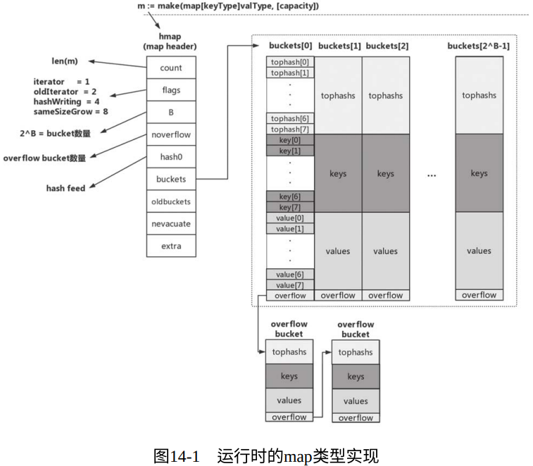
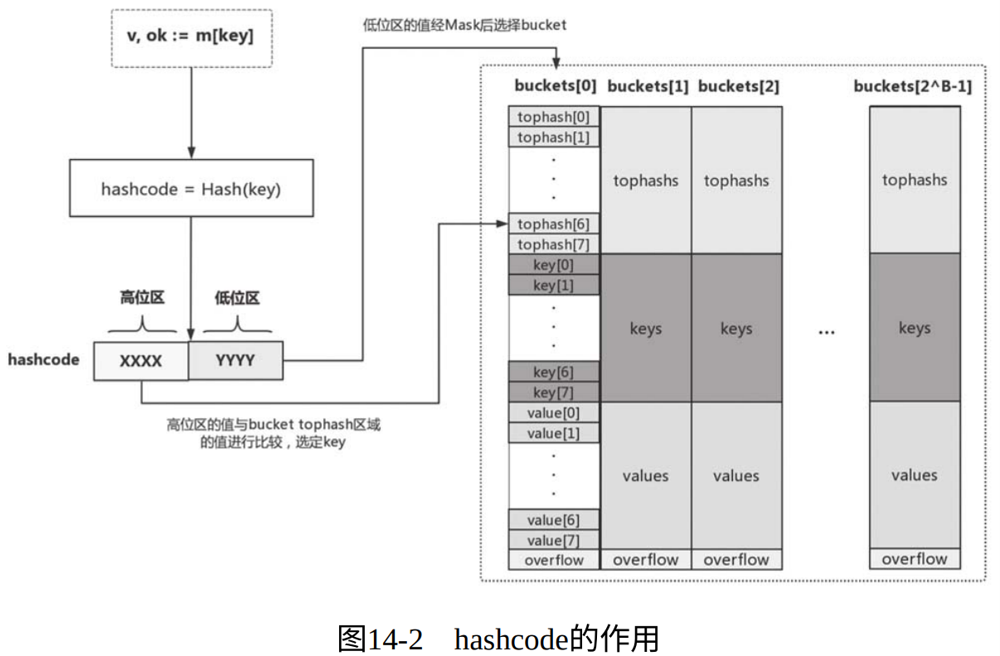
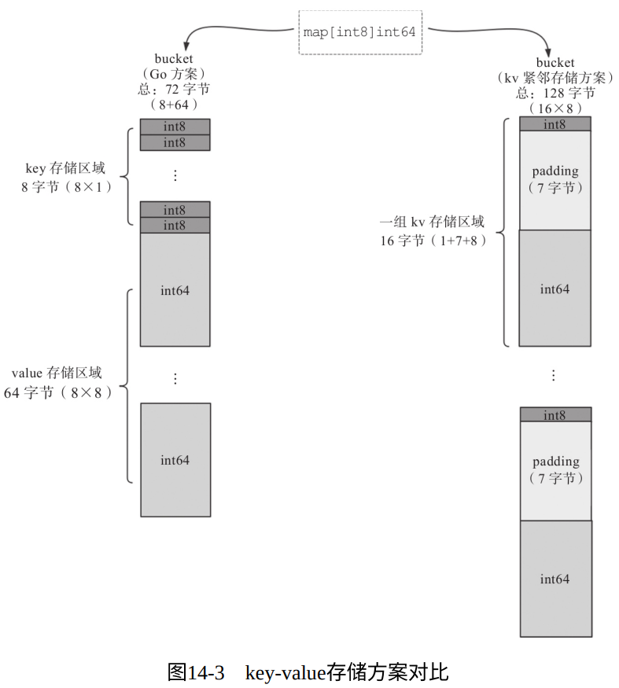
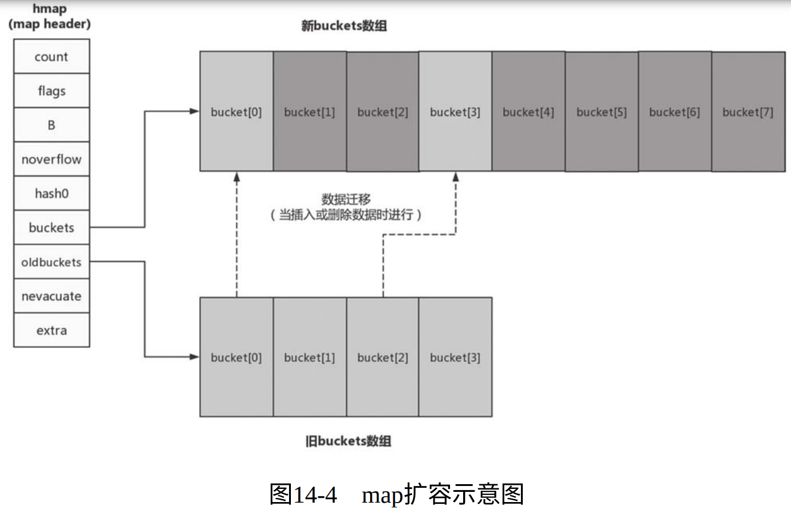

1. 什么是map
map对value的类型没有限制，但对key的类型有严格要求：key的类型应该杨哥定义了多为 “==” 和 “!=” 两个操作符的操作数是的行为 。
因此函数、map、切片不能作为map的key类型
map类型不支持零值可用。因此对处于零值状态的map变量会导致运行时panic：
var m map[string]int // m = nil m["key"] = 1 // panic: assignment to entry in nil map
创建map类型变量有两种方式：
使用复合字面值创建map类型变量
// $GOROOT/src/net/status.go var statusText = map[int]string{ StatusOK: "OK", StatusCreated: "Created", StatusAccepted: "Accepted", ... }
使用make创建map类型变量
// $GOROOT/src/net/client.go icookies = make(map[string][]*Cookie) // $GOROOT/src/net/h2_bundle.go http2commonLowerHeader = make(map[string]string, len(common))
map也是引用类型，将其作为参数传入不会有很大的性能损耗。
2. map的基本操作
(略)
注意：对map做多次遍历，遍历的元素次序并不相同。
3. map的内部实现
在编译阶段Go编译器会将语法层面的map操作重写成运行时对应的函数调用：
// $GOROOT/src/cmd/compile/internal/gc/walk.go
// $GOROOT/src/runtime/map.go
m := make(map[keyType]valType, capacityhint) → m :=
runtime.makemap(maptype, capacityhint, m)
v := m["key"] → v := runtime.mapaccess1(maptype, m, "key")
v, ok := m["key"] → v, ok := runtime.mapaccess2(maptype, m, "key")
m["key"] = "value" → v := runtime.mapassign(maptype, m, "key")
// v是⽤于后续存储value 的空间的地址
delete(m, "key") → runtime.mapdelete(maptype, m, "key")
下图是map类型在运行时层实现的示意图：

3.1. 初始状态
- hmap 是map类型的header，可以理解为map类型的描述符，他存储了后序map类型操作所需的所有信息
count：当前map中的元素个数；也是len的返回值；flags：当前map所处的状态标志，目前定义了4个状态值——iterator 、oldIterator 、hashWriting 、sameSizeGrowB：是bucket数量的以2为底的对数noverflow：overflow bucket 的大约数量hash0：哈希函数的种子值buckets：指向bucket数组的指针oldbuckets：在map扩容阶段指向旧bucket数组的指针nevacuate：在map扩容阶段充当扩容进度计数器。所有下标小于nevacuate的bucket都已经完成了数据排空和迁移操作extra：可选字段
bucket（桶）是用来真正存储键值对数据的容器，每个bucket存储的是Hash值低bit位数值相同的元素，默认容量为 BUCKETSIZE （值为8）；
当桶满且map尚未达到扩容条件时，运行时会建立overflow bucket链表挂在对应的bucket尾部；
- 每个bucket由三部分组成：
tophash、key、value
3.1.1. tophash区域
- 运行时map会通过哈希函数对key做哈希运算并获得一个哈希值 hashcode 。
- 其低位值作为索引用于选定bucket，高位值作为tag用于精切匹配

3.1.2. key存储区域
当我们声明一个map类型变量时，Go运行时就会为该变量对应的特定map类型生成一个 runtime.maptype 实例：
// $GOROOT/src/runtime/type.go type maptype struct { typ _type key *_type elem *_type bucket *_type // 表⽰hash bucket的内部类型 keysize uint8 // key的⼤⼩ elemsize uint8 // elem的⼤⼩ bucketsize uint16 // bucket的⼤⼩ flags uint32 }
maptype的存在让Go在所有map类型共享一套运行时map操作函数，从而减少了最终二进制文件空间的占用
3.1.3. value存储区域
Go运行时采用了将key和value分开存储的策略，而非采用kv紧邻存储方案。这带来了算法上的复杂性，但减少了因为内存对齐带来的内存浪费：
- 
如果key或value的数据长度超过一定数值，那么运行时不会再bucket中直接存储数据，而是会存储key或value的指针
3.2. map扩容
- map扩容的时机：
- “overflow bucket” 过多导致的扩容 ：运行时会新建一个和现有规模一样的bucket数组，然后在进行assign和delete操作时进行排空和迁移。即所谓重新分配
- “count > LoadFactor(负载因子) * 2^B ” 导致的扩容 ：运行时会建立一个两倍于现有规模的新bucket数组，原bucket数组会挂在oldbuckets指针下，新bucket数组则会挂在buckets指针下。真正的排空和迁移工作也是在进行assign和delete操作时逐步进行的。
- 
3.3. map和并发
- map实例不是并发写安全的，不支持并发读写；如果对其进行并发读写，会产生运行时panic；但是map是可以并发读的
- Go1.9中引入了支持并发安全的 sync.Map 类型
- 由于map会自动扩容，所以Go不允许获取map中value的地址
4. 尽量使用cap参数创建map
如果可能的话，我们最好对map使用规模做出粗略的估算，并使用cap参数对map实例进行初始化。
5. 小结
在日常使用map的场合要把握住下面几个要点：
- 不要依赖map的元素遍历顺序；
- map不是线程安全的，不支持并发写；
- 不要尝试获取map中元素（value）的地址；
- 尽量使用cap参数创建map，以提升map平均访问性能，减少频繁扩容带来的不必要损耗。